fg komutunun süper ipucu: Ctrl+Z, terminal oturumunuzu kaydeder.
Yayınlandı: 18 April 2026
- Sorun: meşgul bir terminal
- Üç zorunlu komut
- Senaryo 1: Uzun derleme
- Senaryo 2: Unutulmuş editör
- Senaryo 3: Durdurulan opencode süreci
- Senaryo 4 : Çok sayıda işi aynı anda yönetme
- fg, bg, Ctrl+Z, Ctrl+C ve & arasındaki farklar
- Bir işin tam yaşam döngüsü
- İleri seviye ipuçları
- Yaygın tuzaklar ve hatalar
- Özet diyagram
- Fg neden düşük tahmin ediliyor?
- Teknik not: sinyaller
- Sonuç
- Referanslar
Fırlatırsınız`./gradlew build`, terminal 3 dakika boyunca engelleniyor, ve başka bir şey yapmanız gerekiyor beklerken ? Yeni bir sekme açmaya gerek yok.`Ctrl+Z`İşlemi askıya alır,`fg`Onu tam olarak siz biraktığınız yere geri getirir. Bir geliştiricinin günlük yaşamındaki en az tahmin edilen Unix ipucu.
- tik
-
[]
Sorun: meşgul bir terminal
Her bir geliştirici bu durumu yaşamıştır:
$ ./gradlew build
> Building...Terminal kilitli. Daha fazla komut giremezsiniz. Bir dosyayı görüntülemek ve bir işlemi başlatmak istiyorsunuz.git status, veya bir portun meşgul olduğunu kontrol etmek.
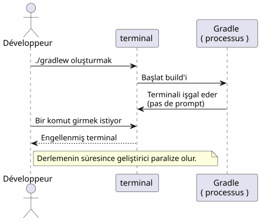
Çoğu geliştirici yeni bir terminal açar. Ancak daha zarif, daha hızlı ve yerel bir çözüm vardır: iş yönetimi.
Üç zorunlu komut
Ctrl+Z — Duraklatma (SIGTSTP)
`Ctrl+Z`Sinyalı gönder.`SIGTSTP`Ön plan sürecine. Süreçaskıda— ölmedi — ve terminal promptunu bulur.
$ ./gradlew build
> Building...
^Z
[1]+ Stoppé ./gradlew build
$Köşeli parantez içindeki sayı`[1]` est le iş numarası. Le `+`Varsayılan işi gösterir
fg — Durdurulan işi ön planda devam ettirmek
`fg`Duraklatılmış işi ön plana getirir; işlem tam olarak durduğu yerden devam eder.
$ fg
./gradlew build
> Building... (reprend où il en était)Belirli bir iş numarasıyla :
$ fg %2bg — Arka planda devam et
`bg`İşlemi terminali bloke etmeden sürdürür. Uzun derlemeler için idealdir.
$ bg
[1]+ ./gradlew build &
$Le `&`Sona erdiğinde, sürecin arka planda çalıştığı anlamına gelir.
jobs — Shell işlerini listele
$ jobs
[1]- Stoppé vim README.md
[2]+ En cours ./gradlew build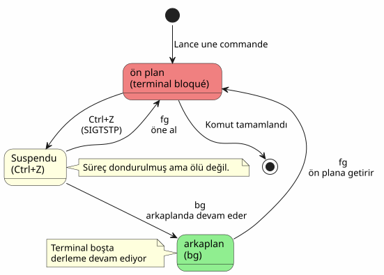
Senaryo 1: Uzun derleme
Bu en yaygın kullanım durumudur. Bir Gradle derlemesi çalıştırıyorsunuz, terminal bloke oluyor ve başka bir şey yapmanız gerekiyor.
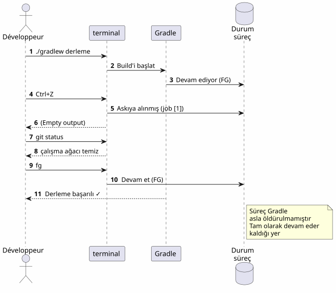
Adım adım
$ ./gradlew build
> Building...
^Z
[1]+ Stoppé ./gradlew build
$ git status
On branch main
nothing to commit, working tree clean
$ fg
./gradlew build
> Building...
BUILD SUCCESSFUL in 2m 34sSenaryo 2: Unutulmuş editör
İçerisiniz`vim`, başka bir dosyayı sans çıkmadan incelemeniz gerekiyor`vim`.
# Dans vim, en mode commande :
:shell
$ cat /path/to/other/file.txt
$ exit
# Retour dans vimAma ağır. İle`Ctrl+Z`, hemen olur:
# Dans vim, n'importe quel moment :
Ctrl+Z
[1]+ Stoppé vim README.md
$ cat /path/to/other/file.txt
# ... lire le fichier ...
$ fg
vim README.md
# Retour exact là où on en était, curseur en place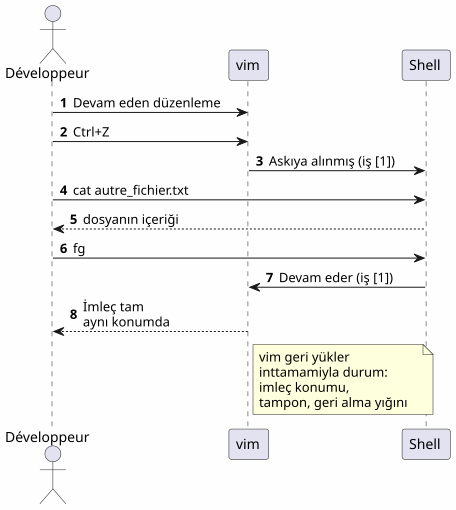
vim`Durumu mükemmel şekilde bir […]'den sonra geri yükler`fg: imleç konumu, tampon içeriği, geri alma geçmişi — her şey korunuyor.
|
Senaryo 3: Durdurulan opencode süreci
Bu makalenin motivasyonunu sağlayan senaryo budur. Kullanıyorsunuz.opencode(komut satırı aracı ile kodunuz üzerindeki bir LLM’yi pilotlamak), ve işlem askıya alındı.
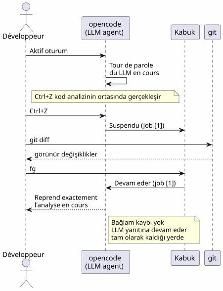
$ opencode
# ... session en cours, LLM analyse le code ...
^Z
[1]+ Stoppé opencode
$ git diff HEAD~1
# vérifier les changements récents
$ fg
opencode
# Le LLM reprend là où il s'était arrêtéAvantaj iki katlıdır :
-
Bağlam kaybı yok: LLM oturumu, konuşma geçmişi, açılan dosyalar — her şey korunur
-
Yeniden başlatma yok: opencode’i yeniden başlatmaya, bağlamı yeniden yüklemeye veya sorunu LLM’e yeniden açıklamaya gerek yok
Senaryo 4 : Çok sayıda işi aynı anda yönetme
fg et `bg`Birden fazla süreç askıya alındığında belirli bir süreci hedef almak için bir iş numarası kabul ederler.
$ vim config.yml
^Z
[1]+ Stoppé vim config.yml
$ ./gradlew test
^Z
[2]+ Stoppé ./gradlew test
$ htop
^Z
[3]+ Stoppé htop
$ jobs
[1] Stoppé vim config.yml
[2]- Stoppé ./gradlew test
[3]+ Stoppé htop
$ fg %2
./gradlew test
# Le build reprend en avant-plan
$ bg %3
[3] htop &
# htop reprend en arrière-plan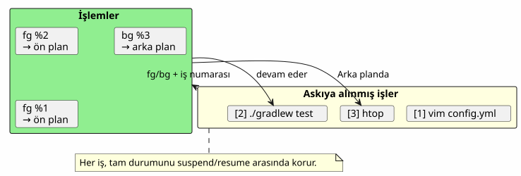
İş komutları özeti
| sipariş | Etki | Örnek |
|---|---|---|
|
Ön plandaki süreci askıya al |
Gönderim`SIGTSTP` |
|
Varsayılan işi ön planda devam ettir |
|
|
İş n’i öne alın |
|
|
Varsayılan işi arka planda sürdürün |
|
|
Arka planda n işini devam ettirir |
|
|
Mevcut kabuğun işlerini listele |
|
|
Tamamla iş n |
|
fg, bg, Ctrl+Z, Ctrl+C ve & arasındaki farklar
Çoğu geliştirici bu mekanizmaları karıştırır. İşte net bir açıklama.
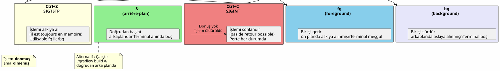
| Kısayol/Komut | Sinyal | Etki | Geriye dön? |
|---|---|---|---|
|
|
İşlemi (dondurulmuş, bellekte) askıya alır |
Evet :`fg` ou |
|
|
İşlemi sonlandır (tamamlandı) |
Hayır : süreç yok edildi |
|
|
İşlemi öldür + core dump |
Hayır : süreç yok edildi |
|
— |
Arka planda doğrudan başlat |
`fg`öne almak için |
Ctrl+Z`dırzararsız. Süreç bellekte olduğu gibi donar. Hemen devam edebilirsiniz`fg. Bir pause, bir stop değil.
|
Bir işin tam yaşam döngüsü
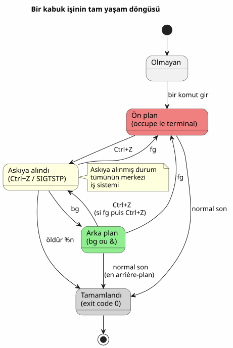
İleri seviye ipuçları
fg ile en güncel iş ve alternatif eğitim
fg`Argüman olmadan işaretli işi getirir.+(en güncel). Ancak kullanabilirsiniz.%-`önceki işi hedeflemek için :
$ vim file1.txt
^Z
[1]+ Stoppé vim file1.txt
$ vim file2.txt
^Z
[2]+ Stoppé vim file2.txt
$ fg # ramène job [2] (le plus récent)
$ fg %- # ramène job [1] (le précédent)bir işi düzgünce öldürmek
$ jobs
[1]- Stoppé vim config.yml
[2]+ Stoppé ./gradlew test
$ kill %2 # envoie SIGTERM au job 2
$ kill -9 %1 # envoie SIGKILL au job 1 (force)désown : kabuktan ayrılmak
disown`Kabuğun işler tablosundan bir iş çıkarılır. İşlem çalışmaya devam eder ancak artık geri getirilemez ile`fg:
$ ./gradlew build &
[1] 12345
$ disown %1
# Le processus continue mais n'est plus lié au shell
# Ça survives à la fermeture du terminalUzun süreçler için nohup ile birlikte kullanın
Bir sürecin terminalin kapatılmasından sonra hayatta kalması için:
$ nohup ./gradlew build &
[1] 12345
$ disown %1
# Le build continue même si vous fermez le terminal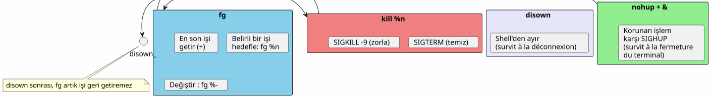
Yaygın tuzaklar ve hatalar
Ctrl+Z ve Ctrl+C’yi karıştırma
Bu en sık yapılan hata.Ctrl+C`İşlemi öldürür.`Ctrl+Z(onu) askıya alır. Eğer basarsınız`Ctrl+C`Refleks olarak tüm durum kaybolur — açık dosyalar, LLM oturumları, devam eden derlemeler.
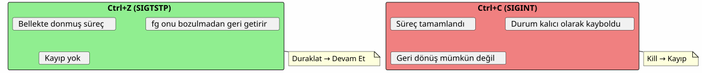
İşler kabukta yerel
jobs, fg et `bg`seulement süreçleri başlatan kabukta çalışırlar. Eğer yeni bir terminal açarsanız, işleri görmeyeceksiniz de l'
# Terminal 1
$ vim file.txt
^Z
[1]+ Stoppé vim file.txt
# Terminal 2 (nouveau)
$ jobs
# (rien — les jobs sont locaux au shell)Sistem genelindeki süreçleri görmek için kullanın,ps ou htop:
ps aux | grep vimİşler kabuk kapanınca hayatta kalmaz.
Terminale kapanırsanız, askıya alınmış veya arka planda çalışan tüm işler silinir. Bir süreç hayatta kalmasını sağlamak için kullanın`nohup` + disown :
$ nohup ./gradlew build &
[1] 12345
$ disown %1
# Fermer le terminal → le build continueEtkileşimli süreçler ve fg
Bazı etkileşimli programlar bir sonra iyi değildir.Ctrl+Z + fg. Nadir olsa da olur :
-
Sinyal kullanan bazı programlar (vim, htop, less) iyi yönetir`Ctrl+Z`)
-
Uzun ağ programları (ssh, opencode) genellikle doğru şekilde alırlar
-
(ncurses) ile terminali değiştiren programlar bazen terminali beklenmedik bir duruma bırakabilir.
Bozuk bir terminalde bir sonra`fg`, yazın :
resetÖzet diyagram
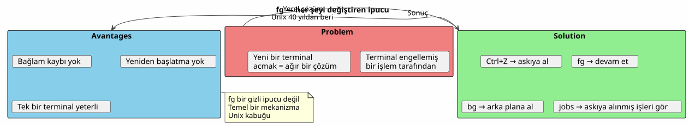
Fg neden düşük tahmin ediliyor?
Çoğu modern geliştirici keşfeder.`fg`Geç, belki de asla. Birkaç neden:
-
IDE’ler terminali gizler.: VS Code bir terminal entegreli, ama çoklu sekmeler yaparlar`fg`Daha az gerekli görünüyor
-
Grafik araçları CLI’lerin yerini alıyor.: dosya yöneticileri, sistem monitörleri, grafiksel Git istemcileri
-
tmux ve screenbu multipleksörler aynı sorunu farklı şekilde çözerler, ama`fg`daha basit ve her zaman mevcut
Ancak,`fg`dir :
-
**evanselel? Wait check spelling: In Turkish it’s "evrensel". So output:
evrenselHer POSIX kabuğunda (bash, zsh, fish …) mevcuttur
2. Bağıl olmadantmux veya screen kurmaya gerek yok.
3. Anlık fotoğraf: iki vuruşlar (Ctrl+Z`sonra`fg) durdurmak ve devam ettirmek
4. Bağlam Koruyucu**: süreç durumu bozulmamıştır
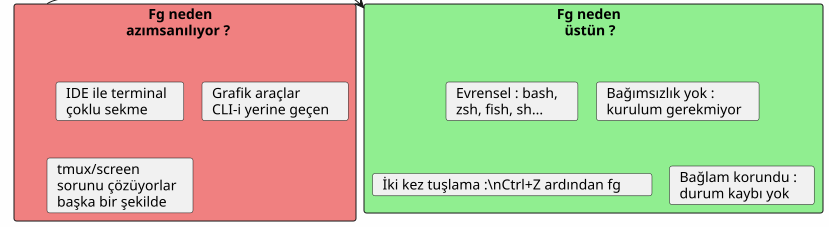
Teknik not: sinyaller
Merak edenler için, İşte ilişkili sinyaller:
| sinyal | İsim | Gönderen | Etki |
|---|---|---|---|
2 |
|
|
Kesinti — işlemi sonlandırır. |
3 |
|
|
Çekirdek dökümüyle çık |
18 |
|
|
Etkileşimli durdur — süreci askıya alır |
19 |
|
|
Devam eder — askıya alınmış bir süreci yeniden başlatır |
15 |
|
|
Temiz sonlandırma |
9 |
|
|
Zorunlu sonlandırma (intersepta alınamaz) |
Tüm akış:
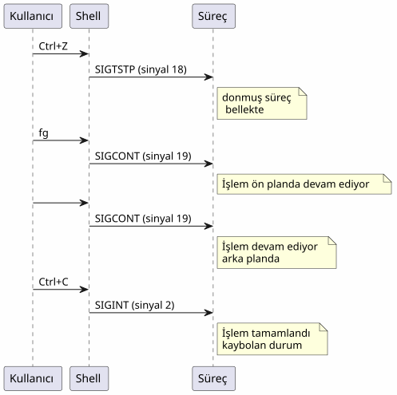
Sonuç
`fg`Bu, gizli bir ipucu değil — bu Unix kabuğunun temel mekanizmasıdır ve 1970’lerden beri kullanılmaktadır. Çoğu geliştiricinin bunu fark etmemesi, günümüzün bir belirtileridir: IDE’ler ve multiplexörler bizleri temellerden uzaklaştırmıştır.
Ama bir SSH sunucusunda olduğunuzda, bir minimal terminalde, veya sadece kullanırken`opencode`ve LLM tam iş yapıyor —Ctrl+Z, fg, bg, `jobs`Sizin en iyi arkadaşlarınız
_ Ctrl+Z askıya alır, fg devam ettirir. Bu terminalin duraklatma-oynatma işlevi. _
Referanslar
-
man bash— JOB CONTROL bölümü -
man signal— POSIX sinyalleri listesi